Chiba, Chiba: things to do, food and stays
Chiba · Chiba
Chiba
Highlighted on the Chiba map.

Stay
ホテルニューオータニ幕張
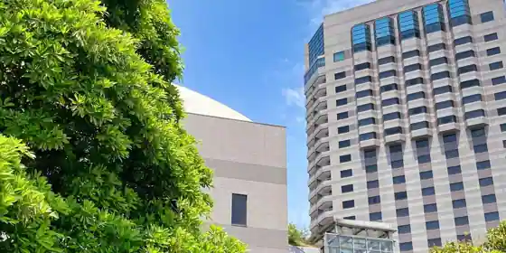
Hotel Nyuotani Makuhari
JR東日本ホテルメッツ プレミア 幕張豊砂
JR Higashinihon Hotel Mettsu Puremia Makuhari Yutaka Suna
Hotel in Mihamakuhamadani, Chiba; 1-minute walk from Makuhariyutakasuna Station.
ホテル ザ・マンハッタン
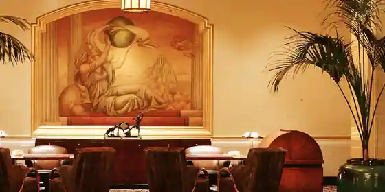
Hotel Za Manhattan
アパホテル＆リゾート〈東京ベイ幕張〉
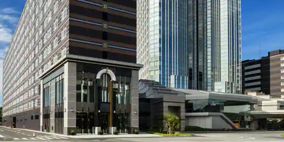
APA Hotel & Resort < Tokyo Bei Makuhari >
ダイワロイネットホテル千葉中央
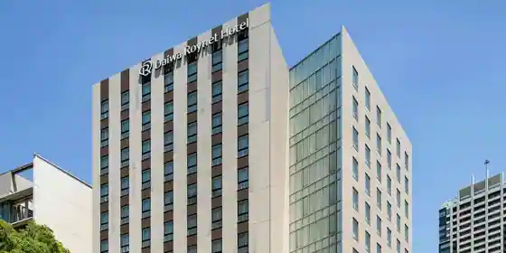
Daiwaroinetto Hotel Chibachuo
ホテルフランクス
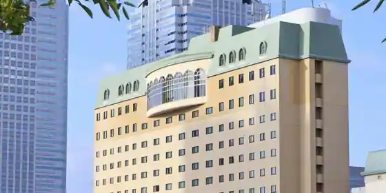
Hotel Furankusu
ホテルシュランザMAKUHARI BAY
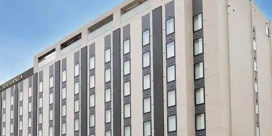
Hotel Shuranza MAKUHARI BAY
Hotel in Mihamakuhibino, Chiba with a large communal bath and business travelers.
椿森ホテル＆レジデンス（THE TSUBAKIMORI Hotel & Residence）
Tsubaki Mori Hotel & Rejidensu (THE TSUBAKIMORI Hotel & Residence)
ホテルマイステイズ蘇我
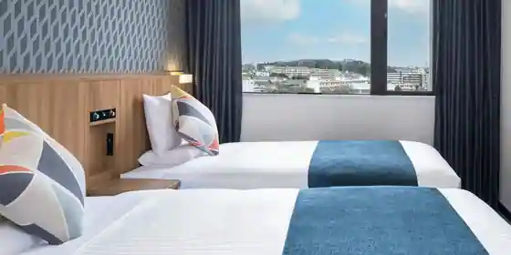
Hotel Maisuteizu Soga
ダイワロイネットホテル千葉駅前
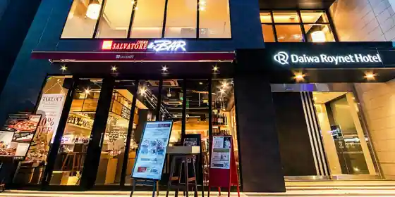
Daiwaroinetto Hotel Chibaeki Mae
Hotel in Chuokufujimi, Chiba; 3-minute drive from Gakuseiikasoinemuryo)Chiba Station.
ホテルサンルート千葉
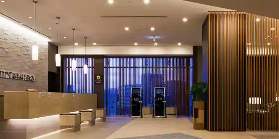
Hotel Sanruto Chiba
ロイヤルパインズホテル千葉
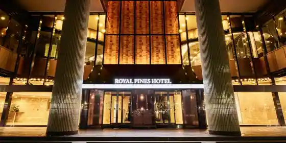
Roiyarupainzu Hotel Chiba
Dining
寿司栄
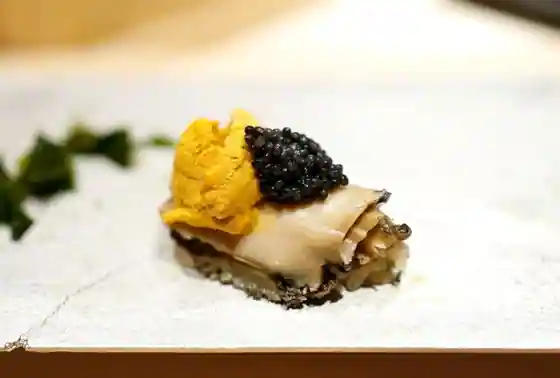
Sushi Sakae
天白
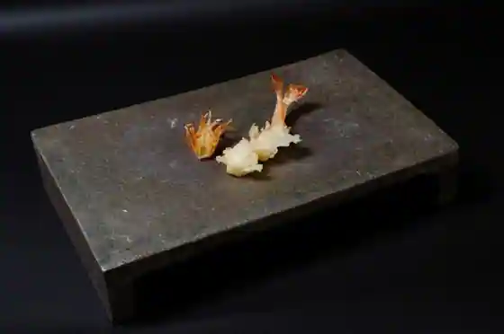
Tenpaku
たかおか
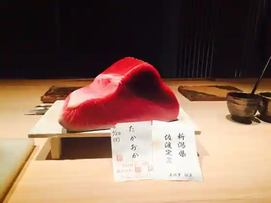
Takaoka
中国四川酒家 蔓山
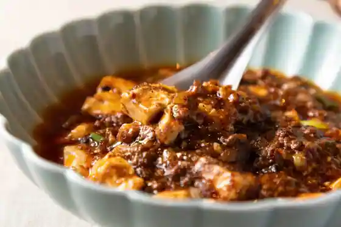
Chugoku Shisen Shuka Tsuru Yama
フランス料理 ル・クール
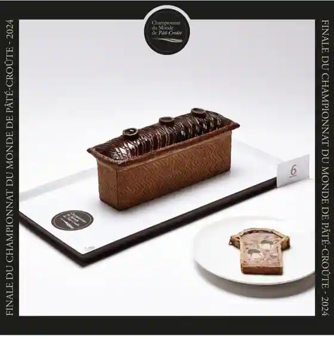
Furansu Ryori Ru Kuru
ラーメン 杉田家 千葉祐光店
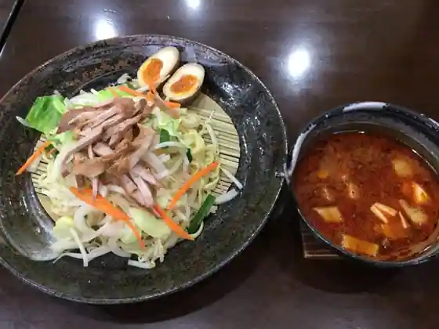
Ramen Sugita Ie Chiba Suke Hikari
サンク・オ・ピエ
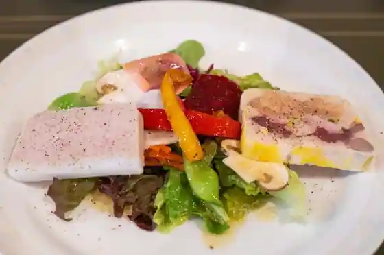
Sanku O Pie
濃麺 海月
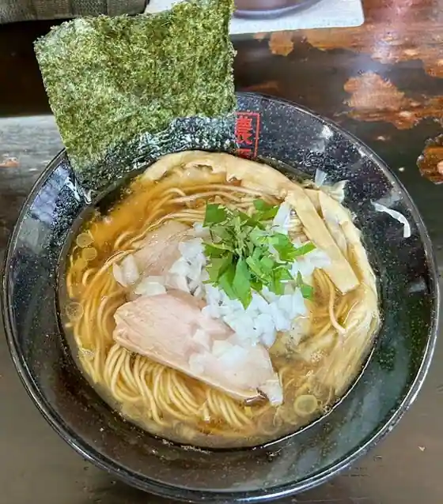
No Men Kurage
エピセ
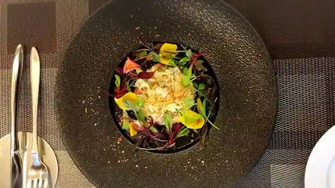
Epise
花見川 大富
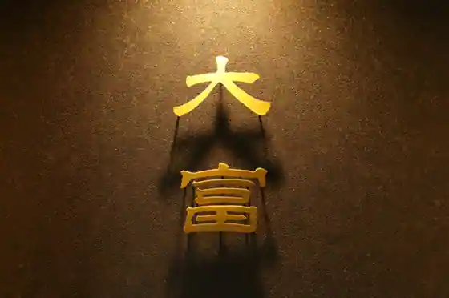
Hanamigawa Taifu
裏武蔵家 西千葉本店
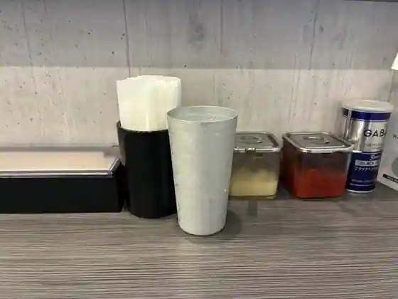
Ura Musashi Ie Nishi Chiba Hon
ラーメン二郎 千葉店
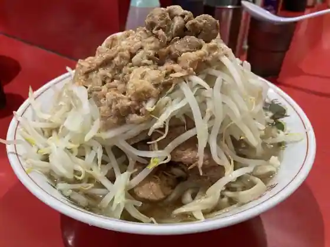
Ramen Jiro Chiba
印度料理シタール
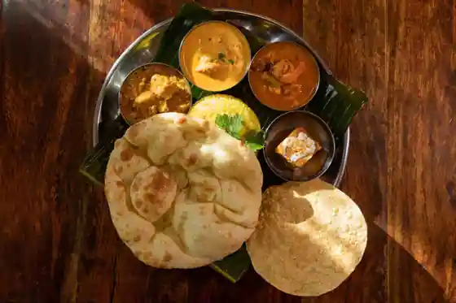
Indo Ryori Shitaru
ラーメン 杉田家 千葉駅前店
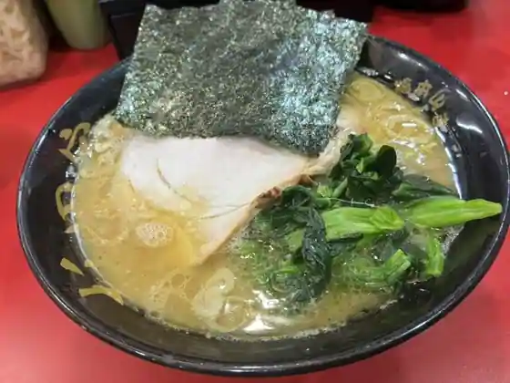
Ramen Sugita Ie Chibaeki Mae
ベンガルタイガー
Bengarutaiga
パントリー コヨーテ
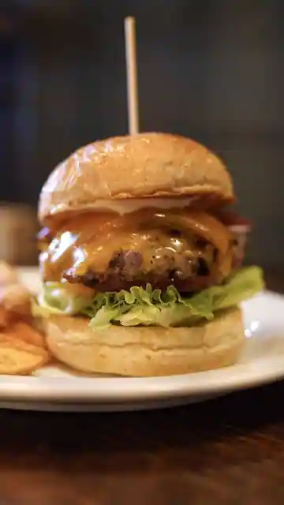
Bakery Tori Koyote
ラーメン BooBoo太郎。
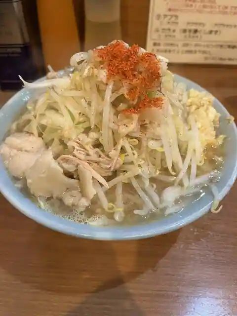
Ramen BooBoo Taro.
SCLabo
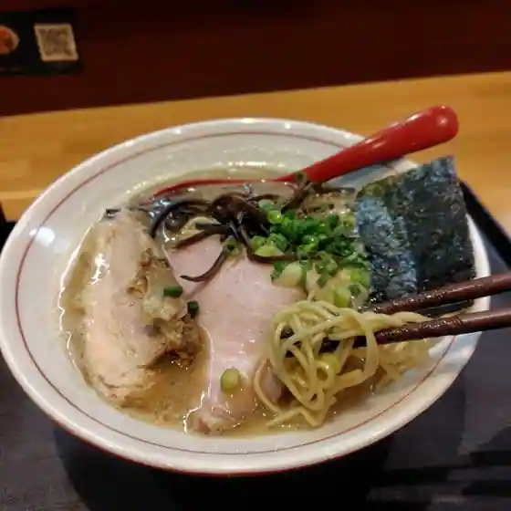
SCLabo
千葉家
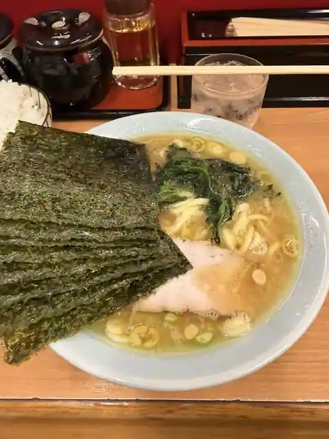
Chiba Ie
松戸富田麺業
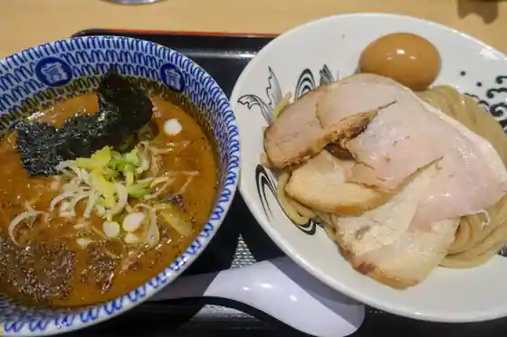
Matsudo Tomita Men Gyo
末広家
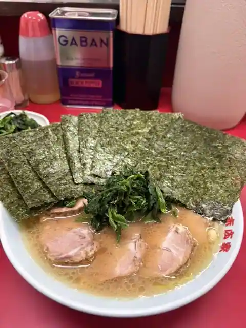
Suehiro Ie
ラーメン 野良裏家
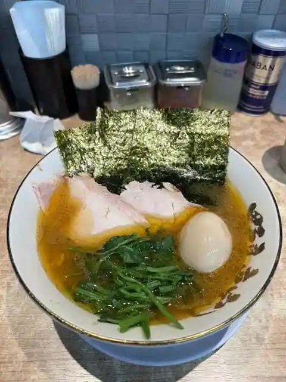
Ramen Nora Ura Ie
Vv.lab
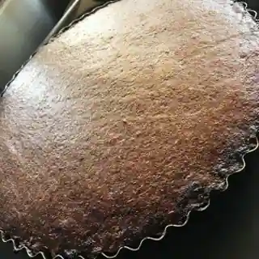
Vv. lab
カレーレストラン シバ
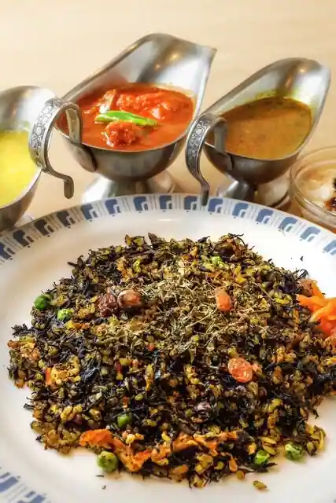
Kare Restaurant Shiba
Sights
SUNSET BEACH PARK INAGE (Inage Seaside Park)
Tomita Satoniwa Ko Sono

Showa Forest

Chiba Science Museum

Chiba Pototawa

Chiba Dobutsu Park
BOTANICA MUSEUM
Chiba Minato Meguri (Kezuhaba)
Kisetsu no Hana (Kosumosu) / Tomita Satoniwa Ko Sono
Chiba Prefectural Makuhari Seaside Park Ken Hama Sono
Izumi Nature Park
Chiba Prefectural Chuo Museum
Chiba Park
Foresutoadobencha Chiba
Makuhari Messe
Chiba Shrine
ZOZO Marinsutajiamu
Chiba Art Museum
Chiba Miyako City Mo no Reru
Chiba Prefectural Art Museum
Tsubaki Mori Komuna
Hoki Art Museum
Aoba no Mori Park
Fukuda Denshi Ariina
Kotehashi Onsui Puru
Kyushin Tani Dembe Inage Besso
Inohana Park
Pasaru Makuhari (Nobori)
Akuarinku Chiba
Oyumi no Shiki no Michi
the RECORDS
Chiba Ritsu Kyodo Museum
Satsukiga Oka Meitengai
Pasaru Makuhari (Kudari)
Makuhari Beach Fesuta Hanabi Kansho Kuruzu / Chiba Minato
Kitatani Tsu Onsui Puru
JA Chiba Mirai Nosambutsu Chokubai Tokoro Shoika Go Chiba Mise
TIPSTAR DOME CHIBA
Kisetsu no Hana (Bara) / Chiba Miyako City Ryokka Botanical Garden
Messemoru
Chiba Wainarii
Chiba Ritsu Ka So Ri Kaizuka Museum (Chiba)
Chiba Ushi no Hiroba
Inage Memorial Museum
Kisetsu no Hana (Tsutsuji) / Showa Forest
Chiba Ken Gyoren Kaisambutsu Chokubai Tokoro (Umi Market)
Nihonshu Puremiamuraunji Ikkon Fugetsu by PERIE CHIBA
Kisetsu no Hana (Hanashobu) / Izumi Nature Park
Chiba Yukari no Ie Inage
Kisetsu no Hana (Ajisai Suiren) / Showa Forest
Chiba Ocha Ya Goten Ato
Chiba Tami Gyararii Inage
Watashi no Inaka Tani to Workshop
Chiharu Farm